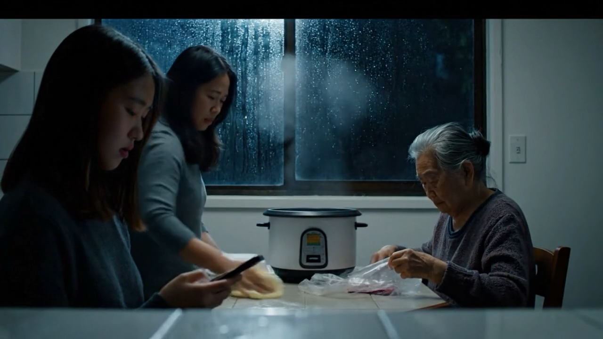

What happens when financial systems encounter households they were not designed to see?
Beyond the Score
Financial & welfare systems
An RSS simulation examining how banking, insurance, and verification systems interact with four culturally distinct New Zealand households — a Samoan-NZ extended family, a Pākehā three-generation household, a Chinese-NZ migrant family, and a rural Māori whānau — navigating open banking, insurance withdrawal, algorithmic risk scoring, and climate-linked displacement pressures. The expected finding was that Māori and Pacific households would be misread. What was less expected was that every household was misread — just differently. There is no unmarked baseline that the algorithm sees clearly.

Algorithmic decision systems are built around a model of the household that does not exist. Reports on the pilot and examines what it reveals about structural assumptions in credit scoring, insurance assessment, and welfare eligibility — and the forms of social life, resilience, and relational support that institutional systems fail to register. Combines critical essay with AI-generated stills, using generative media not to illustrate households but to render the limits of what institutional systems are able to see.
Positions RSS within anticipatory governance and LLM-assisted design research literatures. Presents the full protocol in replicable detail — including a citation architecture for hallucination auditing — and reports four cross-case dynamics identified in the pilot: relational buffering of institutional risk, institutional misreading of relational behaviour, emergent distrust across generations, and latent resilience that conventional risk models cannot register.